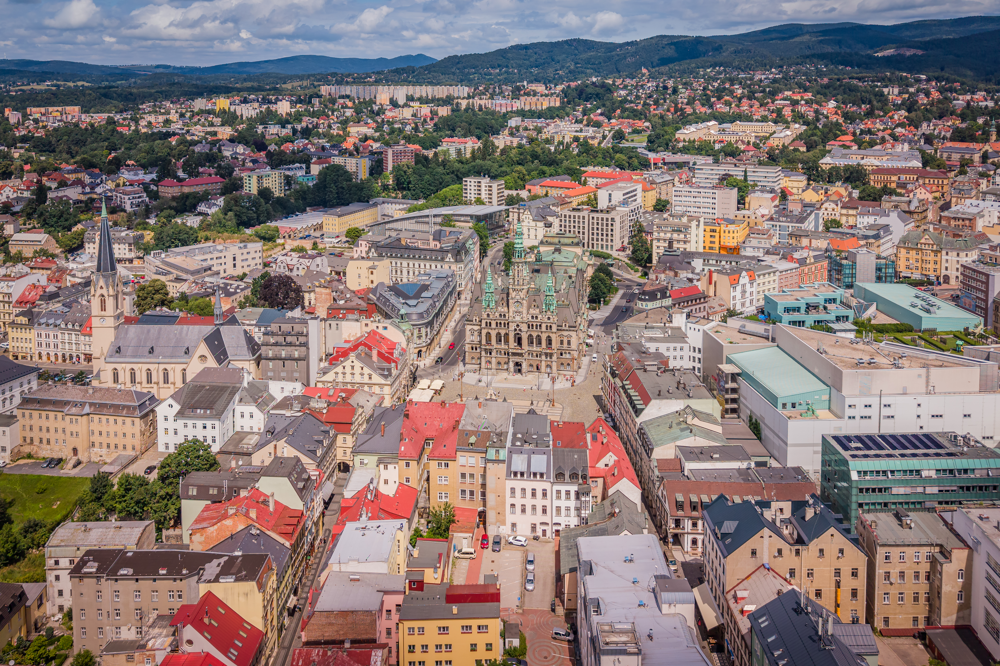
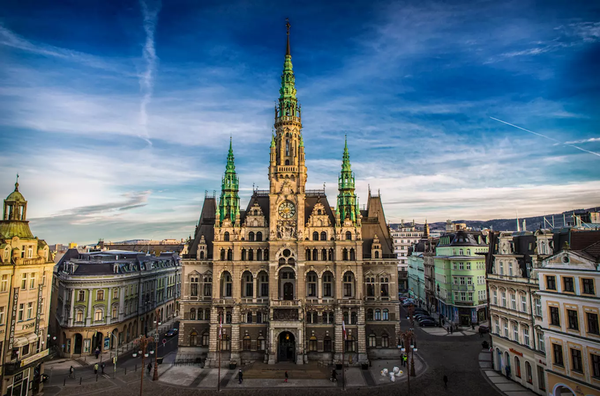
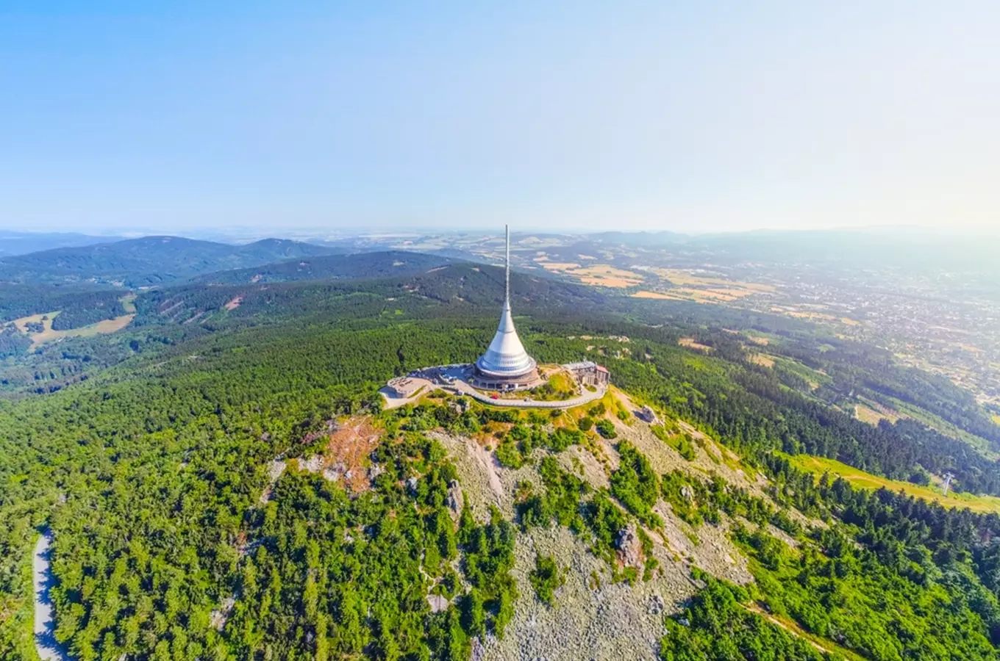
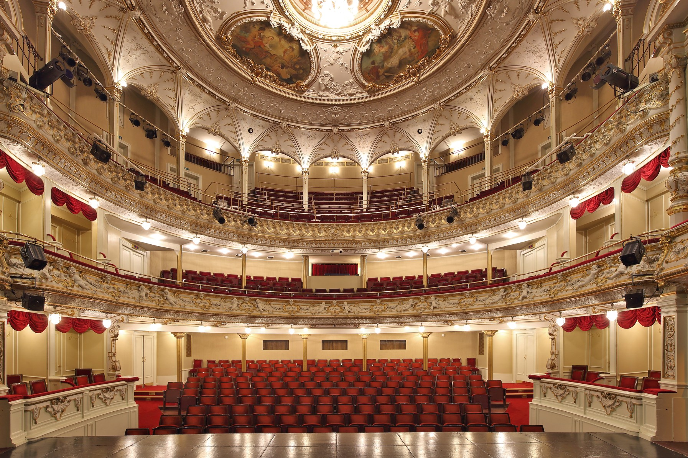

Discover a city of striking architecture, mountain views and the iconic Ještěd Tower in nothern Czechia.
Liberec is a city in northern Czechia, surrounded by the Jizera Mountains. It is known for its historic architecture, cultural attractions and beatiful natural surroundings.
One of the city's most famous landmarks is Ještěd Tower, which stands on a mountain above Liberec. The city is also home to an impressive town hall, museums and popular places for outdoor activities.
Liberec Region
Czechia
Ještěd Tower and historic architecture
Nothern Czechia
Liberec Town Hall is one of the city's most famous landmarks. Built in the late 19th century, it is known for its impressive Neo-Renaissance architecture and richly decorated facade.
The town hall stands in the heart of the city and overlooks a livels square. Its tall tower and detailed design make it one of the most recognizable buildings in northern Czechia.

Ještěd Tower is one of the most iconic landmarks in Czechia. Designed by architect Karel Hubáček, the unique structure was completed in 1973 and stands on the summit of Ještěd Mountain above Liberec.
The bulding combines a television transmitter, a hotel and a restaurant in a distinctive shape that blends into the mountain landscape. Visitors can enjoy panoramic views of the surrounding countryside from the summit.

The F.X. Šalda Theatre is one of the most important cultural landmarks in Liberec. It opened in 1883 and is named after Czech literary critic František Xaver Šalda, who was born in the city.
The theatre is known for its richly decorated historic building and offers opera, drama and ballet performances. It remains an important part of Liberec's cultural life.

Approx. 108,000 residents
Approx. 106 km²
First mentioned in 1352
Ještěd - 1,012 m